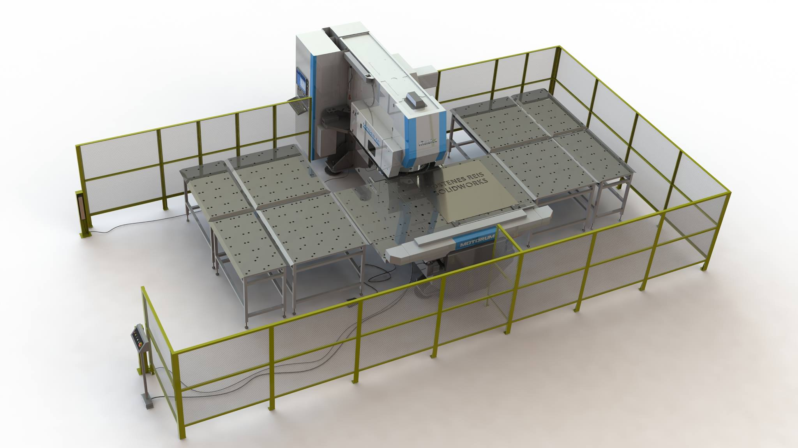
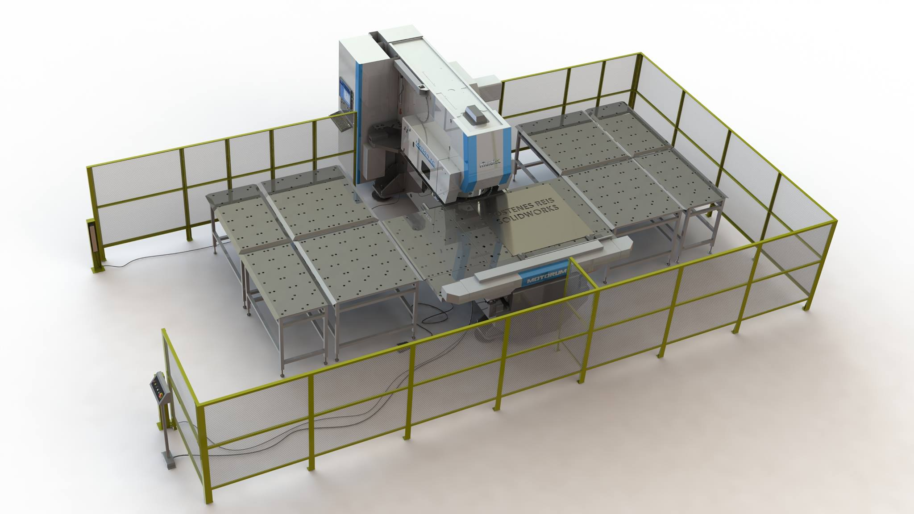
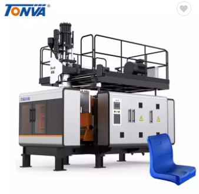
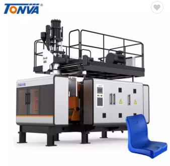

100TATE
100TATE 

Máquina cortadora de lamina.
La máquina para corte de lamina está conformada por tres mecanismos:
- Bandas transportadoras de entrada y salida.
- Sistema de sujeción.
- Corte.
| Etiqueta | Significado | Descripción | |
|---|---|---|---|
| SCH | SENSOR CUT HOME | Sensor de posición Home de la herramienta de corte de lámina | |
| SCG | SENSOR CUT GATE | Sensor de compuerta en posición de seguridad en estación de corte de lámina | |
| SCAP | SENSOR CUT ABLE PIECE | Sensor de presencia de pieza para corte de lámina | |
| BCON | BUTTON CUT ON | Botón de inicio de proceso de corte | |
| BCOFF | BUTTON CUT OFF | Botón de apagado de proceso de corte | |
| BCEMER | BUTTON CUT EMERGECY | Botón de parada de emergencia de proceso de corte | |
| MCX | MOTOR CUT AXIS X | Motor para el recorrido en el eje x de la mesa de corte | |
| MCY | MOTOR CUT AXIS Y | Motor para el recorrido en el eje y de la mesa de corte |

Máquina dobladora de lamina.
La máquina para corte de tubos de bambú está conformada por tres mecanismos:
- Bandas transportadoras de entrada y salida.
- Sistema de sujeción.
- Doblado.
| Etiqueta | Significado | Descripción | |
|---|---|---|---|
| SBU | SENSOR BENT UP | Sensor de cilindro arriba en estación de doblado de lámina | |
| SBD | SENSOR BENT DOWN | Sensor de cilindro abajo en estación de doblado de lámina | |
| SBAP | SENSOR BENT ABLE PIECE | Sensor de presencia de pieza para doblez de lámina | |
| BBON | BUTTON BENT ON | Botón de inicio de proceso de doblado | |
| BBOFF | BUTTON BENT OFF | Botón de apagado de proceso de doblado | |
| BBEMER | BUTTON BELT EMERGENCY | Botón de parada de emergencia de proceso de doblado | |
| SOLBU | SOLENOID BENT UP | Solenoide para válvula de cilindro, cabezal arriba en estación de doblado | |
| SOLBD | SOLENOID BENT DOWN | Solenoide para válvula de cilindro, cabezal abajo en estación de doblado |
Máquina cortadora de tubo.
La máquina para corte de tubos de bambú está conformada por tres mecanismos:
- Bandas transportadoras de entrada y salida.
- Sistema de sujeción.
- Doblado.

Máquina dobladora de tubo.
La máquina para corte de tubos de bambú está conformada por tres mecanismos:
- Bandas transportadoras de entrada y salida.
- Sistema de sujeción.
- Corte.
Estación de soldadura
La máquina para corte de tubos de bambú está conformada por tres mecanismos:
- Bandas transportadoras de entrada y salida.
- Sistema de sujeción.
- Doblado.
| Etiqueta | Significado | Descripción | |
|---|---|---|---|
| SWG | SENSOR WELD GATE | Sensor de compuerta en posición de seguridad en celda de soldadura | |
| SWH1 | SENSOR WELD HOME ROBOT 1 | Sensor de posición Home de la herramienta de soldadura estación #1 | |
| SWH2 | SENSOR WELD HOME ROBOT 2 | Sensor de posición Home de la herramienta de soldadura estación #2 | |
| SWAPS1 | SENSOR WELD ABLE PIECE STATION 1 | Sensor de presencia de pieza para soldadura celda #1 | |
| SWAPS2 | SENSOR WELD ABLE PIECE STATION 2 | Sensor de presencia de pieza para soldadura celda #1 | |
| SWF | SENSOR WELD FLOOR | sensor de presencia para seguridad en celda | |
| SWRC1 | SENSOR WELD ROD CELL1 | Sensor de presencia de material de aporte para soldadura celda #1 | |
| SWGC1 | SENSOR WELD GAS CELL 1 | Sensor de presencia de gas protector para soldadura celda #1 | |
| SWRC2 | SENSOR WELD ROD CELL 2 | Sensor de presencia de material de aporte para soldadura celda #2 | |
| SWGC2 | SENSOR WELD GAS CELL 2 | Sensor de presencia de gas protector para soldadura celda #2 | |
| BWON | BUTTON WELD ON CELL 1 | Botón de inicio de proceso de soldadura de celda #1 | |
| BWOFF | BUTTON WELD OFF CELL 1 | Botón de apagado de proceso de soldadura de celda #1 | |
| BWEMER | BUTTON WELD EMERGENCY CELL 1 | Botón de parada de emergencia de proceso de sodadura de celda #1 | |
| MRWJ1C1 | MOTOR ROBOT WELD JOINT 1 CELL 1 | Motor de junta 1 de robot soldador celda #1 | |
| MRWJ2C1 | MOTOR ROBOT WELD JOINT 2 CELL 1 | Motor de junta 2 de robot soldador celda #1 | |
| MRWJ3C1 | MOTOR ROBOT WELD JOINT 3 CELL 1 | Motor de junta 3 de robot soldador celda #1 | |
| MRWJ4C1 | MOTOR ROBOT WELD JOINT 4 CELL 1 | Motor de junta 4 de robot soldador celda #1 | |
| MRWJ5C1 | MOTOR ROBOT WELD JOINT 5 CELL 1 | Motor de junta 5 de robot soldador celda #1 | |
| MRWJ6C1 | MOTOR ROBOT WELD JOINT 6 CELL 1 | Motor de junta 6 de robot soldador celda #1 | |
| MRWJ1C2 | MOTOR ROBOT WELD JOINT 1 CELL 2 | Motor de junta 1 de robot soldador celda #2 | |
| MRWJ2C2 | MOTOR ROBOT WELD JOINT 2 CELL 2 | Motor de junta 2 de robot soldador celda #2 | |
| MRWJ3C2 | MOTOR ROBOT WELD JOINT 3 CELL 2 | Motor de junta 3 de robot soldador celda #2 | |
| MRWJ4C2 | MOTOR ROBOT WELD JOINT 4 CELL 2 | Motor de junta 4 de robot soldador celda #2 | |
| MRWJ5C2 | MOTOR ROBOT WELD JOINT 5 CELL 2 | Motor de junta 5 de robot soldador celda #2 | |
| MRWJ6C2 | MOTOR ROBOT WELD JOINT 6 CELL 2 | Motor de junta 6 de robot soldador celda #2 | |
| SOLWCS1 | SOLENOID WELD CURRENT STATION 1 | Solenoide para permitir flujo de corriente en estación de soldadura celda #1 | |
| MWFRC1 | MOTOR WELD FLOW ROD CELL 1 | Motor para desenrollado de material de aporte en soldadura celda #1 | |
| VWFGC1 | VALVE WELD FLOW GAS CELL 1 | Válvula para permitir flujo de gas protector en soldadura celda #1 | |
| SOLWCS2 | SOLENOID WELD CURRENT STATION 2 | Solenoide para permitir flujo de corriente en estación de soldadura celda #2 | |
| MWFRC2 | MOTOR WELD FLOW ROD CELL 2 | Motor para desenrollado de material de aporte en soldadura celda #2 | |
| VWFGC2 | VALVE WELD FLOW GAS CELL 2 | Válvula para permitir flujo de gas protector en soldadura celda #2 |

Cabina para pintura
La máquina para corte de tubos de bambú está conformada por tres mecanismos:
- Bandas transportadoras de entrada y salida.
- Sistema de sujeción.
- Corte.
| Etiqueta | Significado | Descripción | |
|---|---|---|---|
| SPFT | SENSOR PAINT FINAL TRAVEL | Sensor de pintura indicador de final de reccorrido de la pieza en estación de pintura | |
| SPG | SENSOR PAINT GATE | Sensor de compuerta en posición de seguridad en estación de pintura | |
| SPP | SENSOR PAINT POWDER | Sensor de presencia de polvos para celda de pintura | |
| BPON | BUTTON PAINT ON | Botón de inicio de proceso de pintura | |
| BPOFF | BUTTON PAINT OFF | Botón de apagado de proceso de pintura | |
| BPEMER | BUTTON PAINT EMERGENCY | Botón de parada de emergencia de proceso de pintura | |
| TFP | TIMER FINAL PAINT | Temporizador de encendido de pistolas de pintura | |
| CPP | COUNTER PIECE PRESENCE | Contador de piezas a la entrada de la cabina de pintura | |
| MPTC | MOTOR PAINT TRAVEL CHAIN | Motor para activar el recorrido de las piezas en la estación de pintura | |
| VPFP | VALVE PAINT FLOW POWDER | Válvula para permitir el flujo de polvos en estación de pintura | |
| MPG1 | MOTOR PAINT GUN 1 | Motor recorrido de set de pistolas en pared derecha de cabina de pintura | |
| MPG2 | MOTOR PAINT GUN 2 | Motor recorrido de set de pistolas en pared izquierda de cabina de pintura | |
| VPFA | VALVE PAINT FLOW AIR | Válvula activación de flujo de aire en cabina de pintura |
 

Sopladora de plástico
La sopladora de plástico está conformada por tres mecanismos:
- Inyección del polímero.
- Molde.
- Corte.
| Etiqueta | Significado | Descripción | |
|---|---|---|---|
| SBFH | SENSOR BLOWING FULL HOPPER | Sensor de tolva de plástico llena en estación de soplado | |
| SBT | SENSOR BLOWING TEMPERATURE | sensor soplado temperatura plástico | |
| SBG | SENSOR BLOWING GATE | Sensor de compuerta en posición de seguridad en estación de soplado | |
| SBFA | SENSOR BLOWING FLOW AIR | Sensor de flujo de aire para soplado | |
| SBFW | SENSOR BLOWING FLOW WATER | sensor de flujo de agua para refrigeración molde de soplado | |
| SBGUO | SENSOR BLOWING GRIPPER UPPER OPENED | sensor de pinza superior abierta en soplado | |
| SBGUC | SENSOR BLOWING GRIPPER UPPER CLOSED | sensor de pinza superior cerrado en soplado | |
| SBMIN | SENSOR BLOWING MOLD IN | sensor de molde abierto en soplado | |
| SBMO | SENSOR BLOWING MOLD OUT | sensor de molde cerrado en soplado | |
| SBGBO | SENSOR BLOWING GRIPPER BOTTOM OPENED | sensor de pinza inferior abierta en soplado | |
| SBGBC | SENSOR BLOWING GRIPPER BOTTOM CLOSED | sensor de pinza inferior cerrado en soplado | |
| SBEIN | SENSOR BLOWING EXTRUDER IN | sensor de extrusor adentro en soplado | |
| SBEO | SENSOR BLOWING EXTRUDER OUT | sensor de extrusor afuera en soplado | |
| SBTR | SENSOR BLOWING TRANSPORTER RETRACTED | sensor de transportador retraido en soplado | |
| SBTE | SENSOR BLOWING TRANSPORTER EXTENDED | sensor de transportador extraido en soplado | |
| BBON | BUTTON BLOWING ON | botón de inicio soplado | |
| BBOFF | BUTTON BLOWING OFF | botón de parada soplado | |
| BBEMER | BUTTON BLOWING EMERGENCY | botón de emergencia soplado | |
| TBMC | TIMER BLOWING MOLD CLOSED | temporizador de molde cerrado en soplado | |
| SOLBEIN | SOLENOID BLOWING EXTRUDER IN | solenoide para cilindro extrusor adentro en soplado | |
| SOLBEOUT | SOLENOID BLOWING EXTRUDER OUT | solenoide para cilindro extrusor afuera en soplado | |
| SOLBGUO | SOLENOID BLOWING GRIPPER UPPER OPENED | solenoide para cilindro de pinza superior abierta en soplado | |
| SOLBGUC | SOLENOID BLOWING GRIPPER UPPER CLOSED | solenoide para cilindro de pinza superior cerrada en soplado | |
| SOLBGBO | SOLENOID BLOWING GRIPPER BOTTOM OPENED | solenoide para cilindro de pinza inferior abierta en soplado | |
| SOLBGBC | SOLENOID BLOWING GRIPPER BOTTOM CLOSED | solenoide para cilindro de pinza inferior cerrada en soplado | |
| SOLBMIN | SOLENOID BLOWING MOLD IN | solenoide para cilindro de molde abierto en soplado | |
| SOLBMOUT | SOLENOID BLOWING MOLD OUT | solenoide para cilindro de molde cerrado en soplado | |
| SOLBTE | SOLENOID BLOWING TRANSPORTER EXTENDED | solenoide para cilindro trasnsportador extendido | |
| SOLBTR | SOLENOID BLOWING TRANSPORTER RETRACTED | solenoide para cilindro trasnsportador retraido |